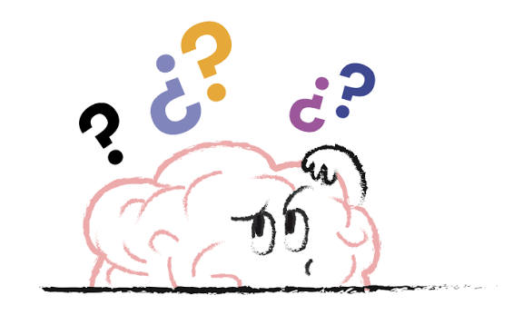
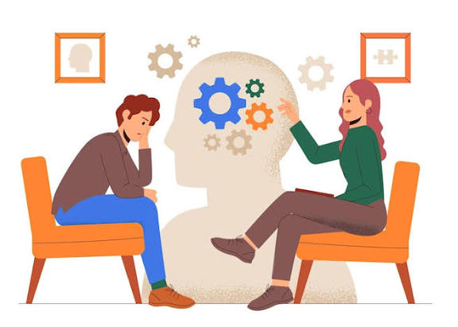
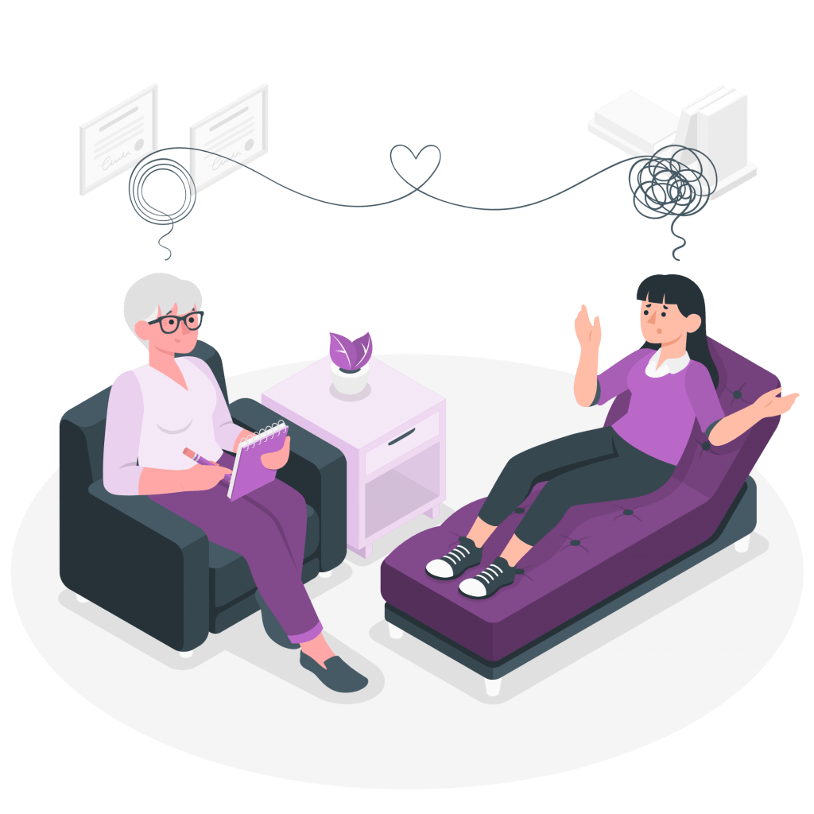

PREGUNTAS FRECUENTES

¿Qué puedo esperar de una primera orientación?
Es una oportunidad para conocer los servicios disponibles,
expresar tus dudas iniciales y recibir información sobre
los posibles pasos a seguir.

¿Necesito tener un problema grave para
acudir al psicólogo?
No. La orientación psicológica también puede ayudarte a comprender
tus emociones, afrontar cambios personales y desarrollar habilidades
para cuidar tu bienestar.
¿Puedo solicitar información sin
comprometerme a iniciar terapia?
Sí. Puedes solicitar información sobre los servicios,
las modalidades de atención y el proceso antes de
tomar una decisión.

¿La atención puede ser en línea?
La disponibilidad de esta modalidad depende de los servicios
que ofrezca la profesional. Puedes consultarlo mediante el
formulario de contacto.
¿Mi información personal será confidencial?
La información se manejará conforme a las obligaciones
profesionales y las disposiciones aplicables sobre
confidencialidad y protección de datos personales.